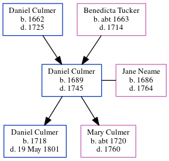

Daniel Culmer 1689 - 1745
[ Home ] | [ Calendar ] | [ Surnames Index ] | [ Errors ] | [ Family History ]The child of Daniel Culmer and Benedicta Tucker, Daniel Culmer, the 7 times great-grandfather of Nigel Horne, was born in Preston, Kent, England in 16891, was baptised there on 7 Jan 1690 and married Jane Neame (with whom he had 2 children: Daniel and Mary) at St Mary The Virgin's Church, Church Street, Eastry, Kent, England on 10 Jun 17142.
He died in 1745 in Preston and was buried there at St Mildred's Church on 23 Apr 17453.
Parents
- Daniel was born in 1662
- Benedicta was born c. 1663
Children
- Daniel was born in 1718
- Mary was born c. 1720
Citations
- Kent, England, Tyler Index to Parish Registers, 1538-1874 Online publication - Provo, UT, USA: Ancestry.com Operations, Inc., 2010. This collection was indexed by Ancestry World Archives Project contributors.Original data - Frank Watt Tyler. The Tyler Collection. Canterbury, Kent, England: The Institute of Herald
- England Marriages 1538-1973 - Findmypast
- Kent, Canterbury Archdeaconry Burials - Findmypast
Media
Kent, Canterbury Archdeaconry burials - GBPRS/CANT/D/95370051
England Marriages 1538-1973 - R_847826521
Kent, Canterbury Archdeaconry marriages - GBPRS/CANT/M/97212063/1
England Marriages 1538-1973 - R_847825794
Family Tree
Map
Generated by ged2site. Last updated on Jul 3, 2024
Known Issues
Death date (1745) has no citations